Биржевая линия д. 14-16
Четырехэтажный дом номер 14 по Биржевой линии появился в 1861-1862 годах, почти сразу после выкупа земли. Строительством занимался архитектор Николай Павлович Гребенка, один из основных зодчих купеческой семьи. На первом этаже нового дома располагался обновленный и расширенный магазин. Второй этаж полностью занимало семейство купцов Елисеевых, выше находилось правление компании, офисы и кабинеты, а последний этаж отдали служащим для проживания. Да, работники получали бесплатное жилье, в добавок к социальному страхованию, хорошему жалованию и другим видам поддержки. По окончанию строительства дома Николай Павлович сразу перешел к сооружению винных подвалов по прямому распоряжению Григория Петровича Елисеева. Дело в том, что купцы были известны далеко за пределами Российской империи и нанимали большие подвалы и кладовые в Бордо, Хересе, Порту и на Мадейре. Иногда компания скупала целые урожаи и кораблями привозила испанские и португальские вина. Для этих целей в 1858 году купцы приобрели в собственность большой морской пароход «Александр II» в довесок к трём имевшимся голландским грузовым кораблям «Архангел Михаил», «Святой Николай» и «Конкордия». Нередко вина, после выдержки в подвалах Елисеевых, разливались в бутылки и отправлялись в Лондон, Бордо и даже Нью-Йорк. Отсюда и появилась у торгового дома «Братья Елисеевы» острая нужда в больших винных подвалах рядом со столичной таможней. В новых погребах установили огромные дубовые бочки ёмкостью на 700 ведер. Но уже в 1868-1869 годах Николай Павлович опять принимается за работу и существенно расширяет склады, а также строит новые. В 1873 году высокое качество вин «Братьев Елисеевых» было отмечено почетным дипломом в Вене и золотой медалью в Лондоне. В следующем году «в знак долголетней полезной деятельности» торговый дом был удостоен права изображения Государственного герба и до революции на фасаде дома 14 по Биржевой линии висело увеличенное изображение этого знака. В 1896 г началась перепланировка дома 14 на Биржевой линии. За дело взялся Гавриил Васильевич Барановский, еще при Григории Петровиче архитектор надстроил над домом в Биржевом переулке мансарды, сдаваемые под мастерские художников. Здесь находилась мастерская Архипа Куинджи, и сейчас открыт музей художника. 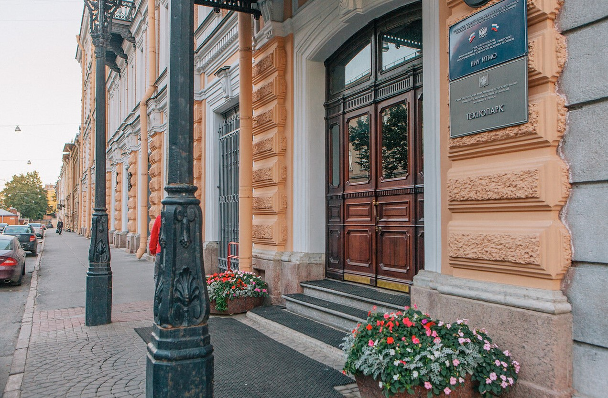
Сердце торговой империи Елисеевых
В 1821г. Петр Елисеевич Елисеев, основатель известной купеческой династии начал торговлю иностранными винами, открыв магазин колониальных товаров. В 1824г. он приобрел дом № 10 по Биржевой линии и открыл магазин. Соседний участок № 12 перешел Елисееву от жены статского советника Е. Е. Политковского в начале 1860-х гг. В здании, расположенном по соседству (№16), Елисеевы арендовали таможенный склад. На данном угловом участке еще в первой четверти XIX века были сооружены каменные двухэтажные склады с классицистическим фасадом. На 1849 год здесь размещались лавки и кладовая купца и Коммерции Советника Ивана Алексеевича Жадимировского. Со временем квартал, ограниченный Биржевой линией, Биржевым и Волховским переулками, стал «сердцем» елисеевской торговой империи. Для Елисеевых Н.П. Гребенка выстроил здесь же особняк на Биржевой линии 14 в 1861-1862 гг.
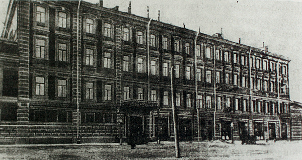 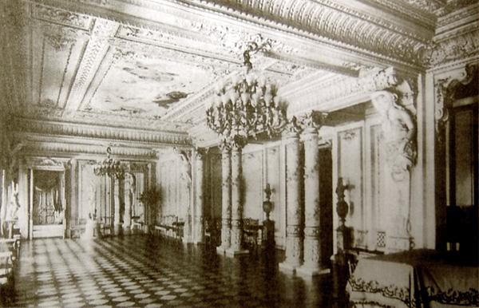В домe 14 после реконструкции в первом этаже размещался магазин и позже контора, верхние два этажа были жилыми. Были увеличены некоторые помещения, осуществлена новая отделка в парадных залах в духе ренессанса и рококо. По сути дела обновленная парадная анфилада соединила два соседних елисеевских дома, 14 и 12. Парадная анфилада выходила окнами на Биржевую линию, другая анфилада, где были приемная и кабинет, - во двор. До мелочей было продумано жилое пространство: можно было из квартиры попасть прямо и во двор, где были склады, и в подвалы, где были хранилища с вином. Торговый дом «Братья Елисеевы» получил разрешение на торговлю винами в розлив: дозволение от городских властей «на трактирный промысел при фруктовой лавке и ренсковом погребе» в доме Котомина. Аналогичное разрешение было получено для лавки вдоме 14 по Биржевой ул., где велась «при фруктовой лавке и ренсковом погребе торговля закусками и завтраками… с правом продажи спиртных напитков» В 1874 г. Торговый дом «Братья Елисеевы» за долголетнюю и безупречную деятельность получил почетное право изображать на своей продукции государственный герб. С тех пор и до 1917 г. на фасаде дома 14 по Биржевой линии, где находилась Главная контора Елисеевых, висело увеличенное изображение почетной награды. Затем дома 12 и 14 отошли к ГОИ им. С. И. Вавилова (академик был директором этого института в 1941–1946 гг.). На фасаде дома 14 можно видеть мемориальные доски в честь известных ученых, работавших здесь.
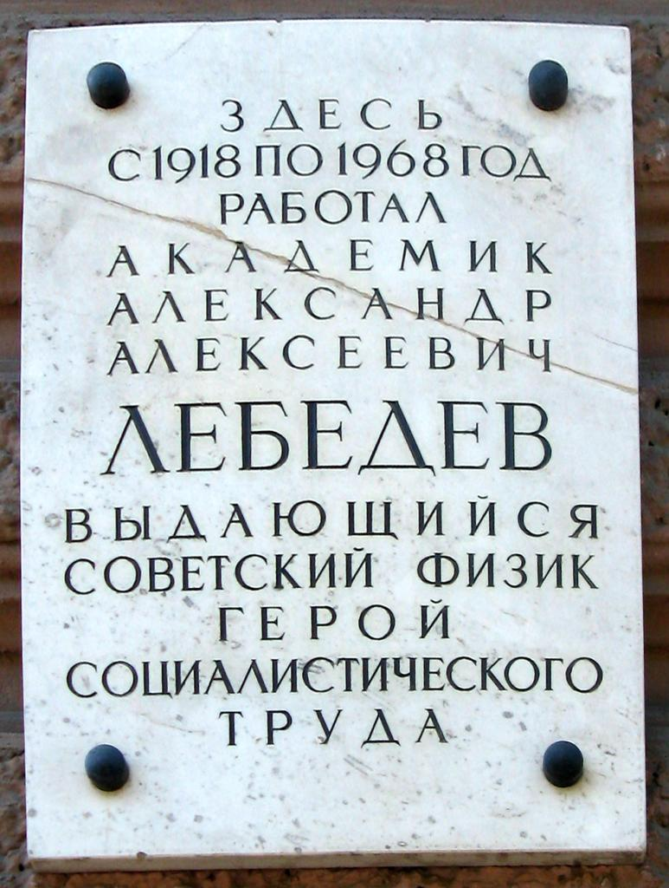 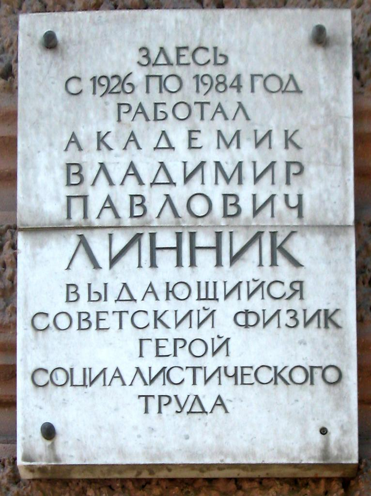 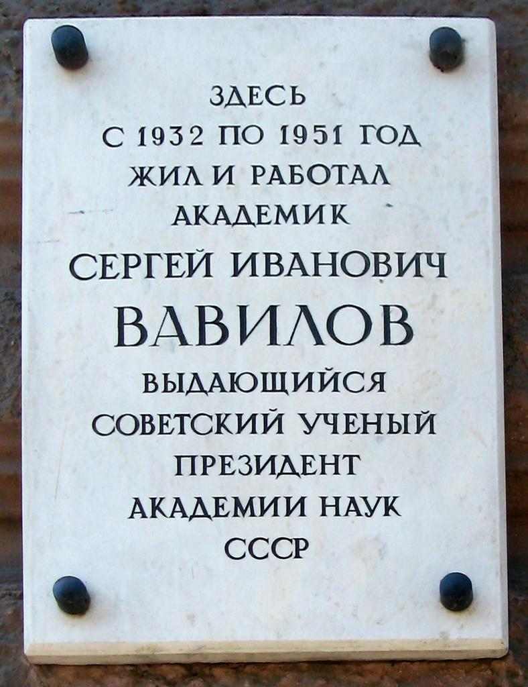 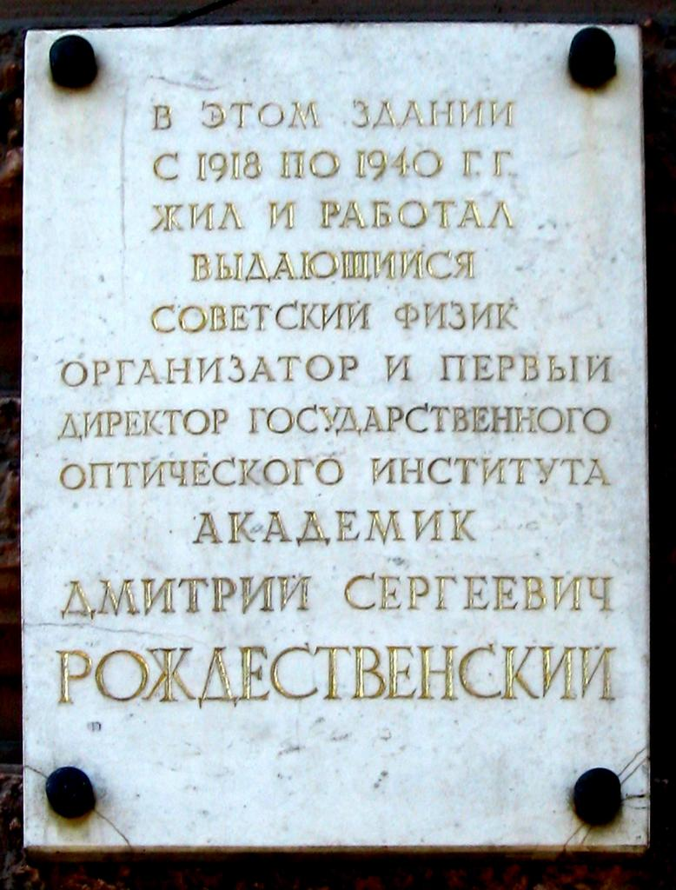
Парадная лестница
Гавриил Васильевич Барановский перестроил парадную лестницу в 1896 г. и перепланировал бельэтаж семейного гнезда под вкус нового хозяина, любившего пышную эклектику. Барановский любил украшать доходные дома невероятными лестницами. Удивительно, что столько внимания было уделено соединению этажей, которое не приносило никакой прибыли. На первом и втором пролетах ступени лестницы имеют овальные обводы, перила изящной спиралью раскручиваются вверх от центра. Округлые формы лестничного проёма повторяются в закруглениях концов ступеней с обеих сторон и в узоре ограды перил. Они, в свою очередь, вместе с прямоугольными панелями на стенах объединяют интерьер всех четырех этажей лестничной клетки в одном архитектурном стиле. 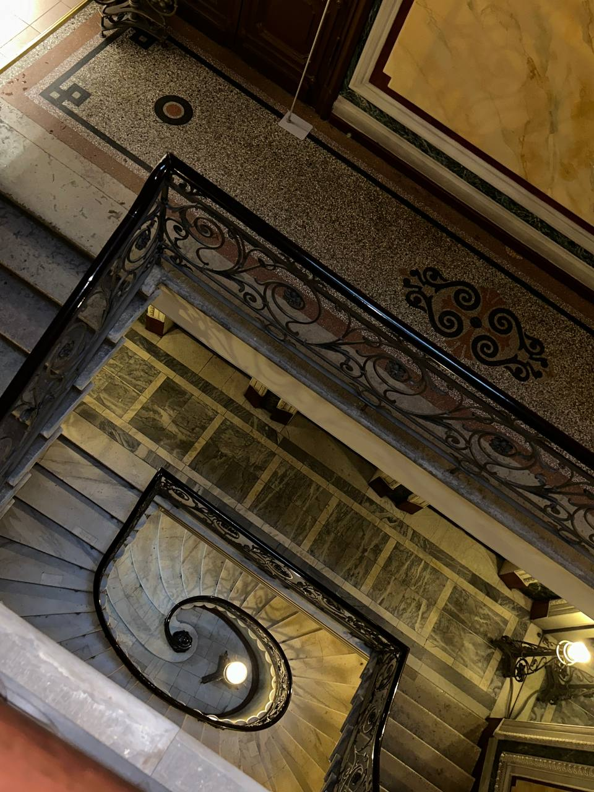 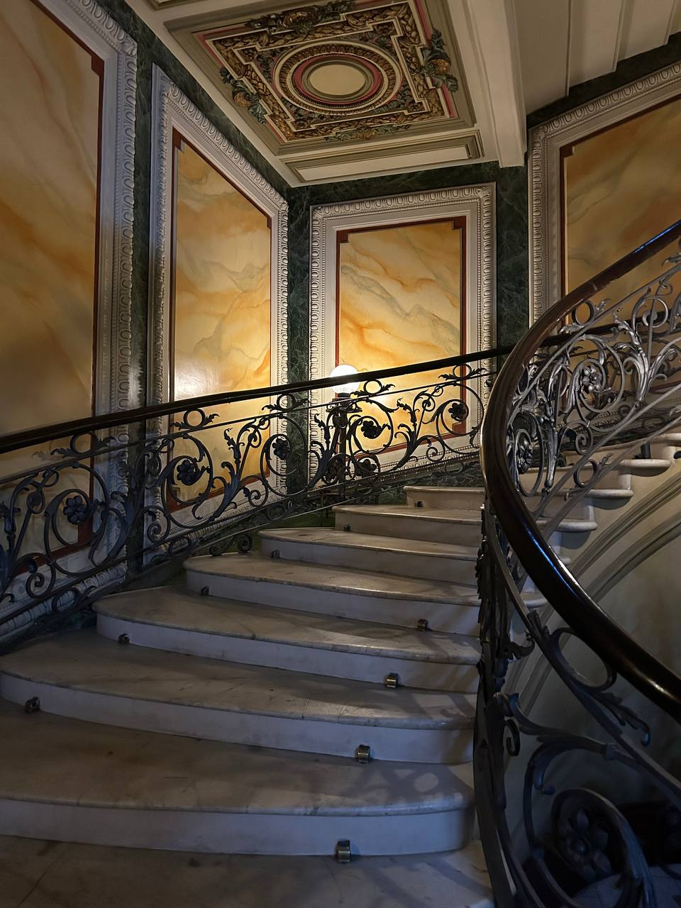
Детали интерьера
Интерьеры дома были оформлены с купеческой роскошью в стиле поздней эклектики. При ремонте Барановский широко использовал живописные плафоны, фризы, керамические панно, мозаики, позолоту, зеркала от пола до потолка, деревянную обшивку и лепнину. В кабинете стены, потолок, оконные проёмы и камин отделаны резными дубовыми панелями с мозаичными вставками и кессонированным потолком. Столовая решена в стиле неоренессанса, а концертный зал украшают кариатиды и ордер. Большая часть всей этой роскоши сохранилась до наших дней. Многие архитектурные элементы плотно ассоциируются с интерьерами императорских дворцов. Сложно сейчас представить, что скромное с виду старинное здание скрывает внутри такую красоту, созданную по желанию богатейших купцов, заседавших здесь.
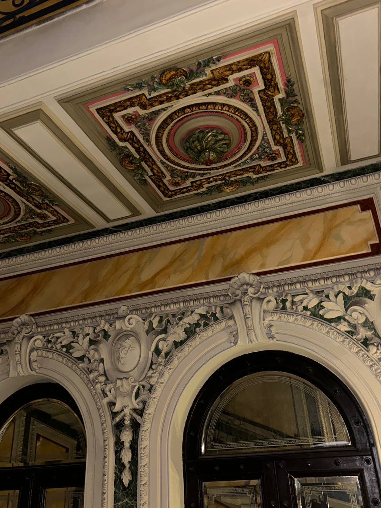 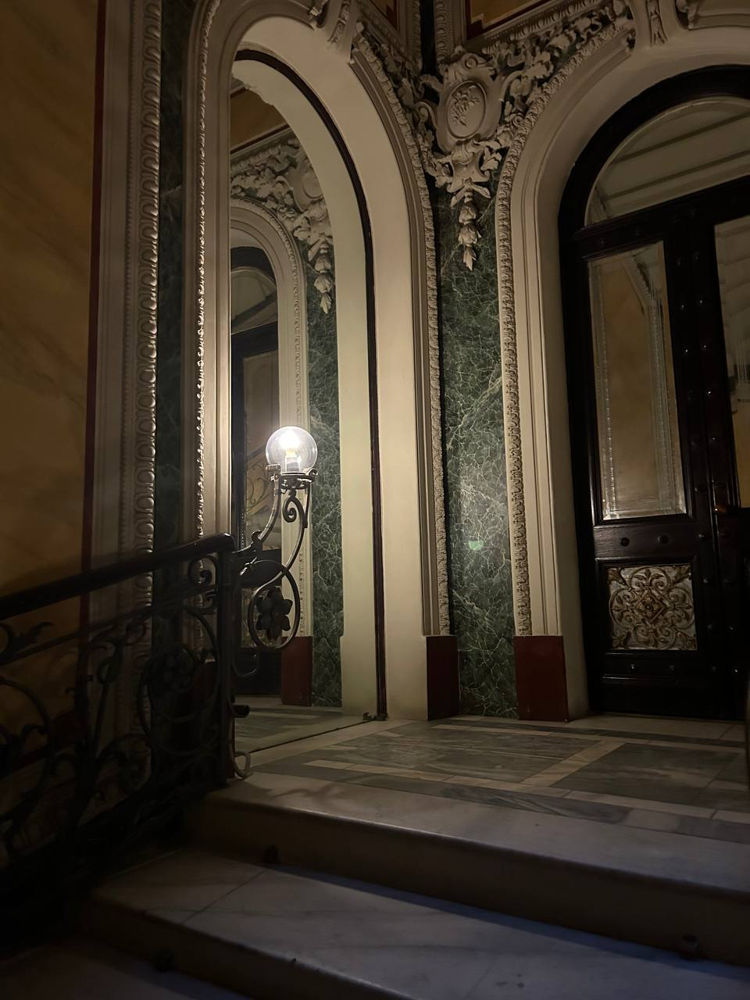
Первый этаж
На первом этаже, ныне занимаемом музеем оптики, располагался магазин торгового дома «Братья Елисеевы».
Второй этаж
На втором этаже разместилось само семейство купцов Елисеевых.
Третий этаж
На третьем этаже находились офисы.
Четвертый этаж
Четвертый этаж был отдан под квартиры служащих дома Елисеевых
Фойе
Раньше приходивших к Елисеевых курьеров с письмами и посетителей магазина не пускали далее не очень просторного вестибюля - слева от входа располагался магазин (сейчас, напомню, его помещения занимает музей оптики), а справа - скорее всего, складские помещения магазина (сейчас здесь касса и гардероб музея). И люди стояли, сгорая от желания заглянуть за дверь, скрывавшую за собой роскошную витую парадную лестницу, ведущую к покоям предпринимателей.
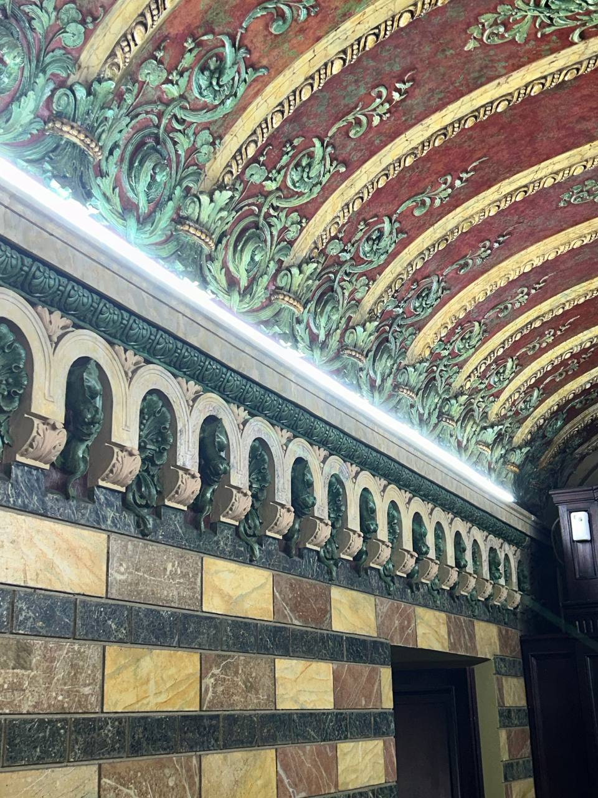 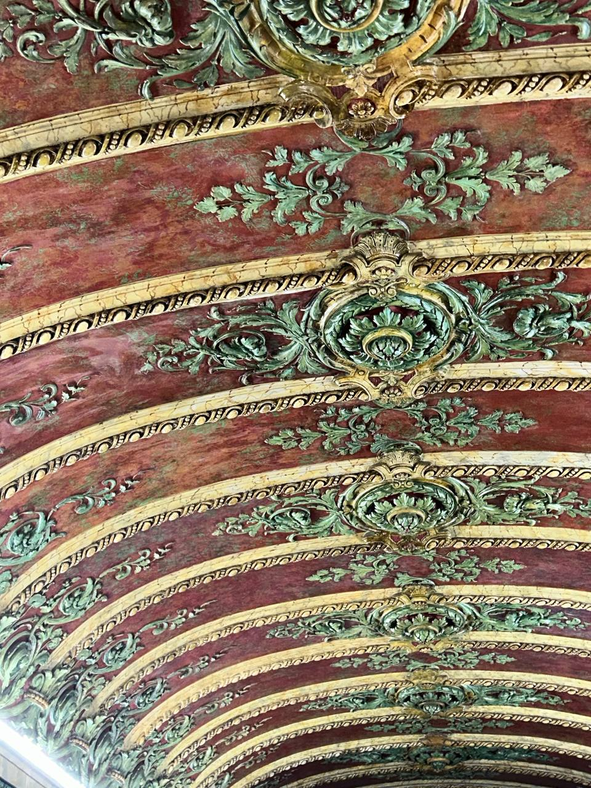
Дворовый флигель
В дворовом флигеле размещалась шоколадная фабрика. После передачи этого и соседних зданий Оптическому институту здесь находились квартиры его сотрудников. С 1918 по 1940 год жил организатор и первый директор ГОИ академик Д. С. Рождественский, с 1932 по 1951, с перерывом, - физик-оптик, президент АН СССР С. И. Вавилов, имя которого носит ГОИ. С момента основания по 1968 год в институте работал академик А. А. Лебедев, возглавлявший разработку первого советского электронного микроскопа.
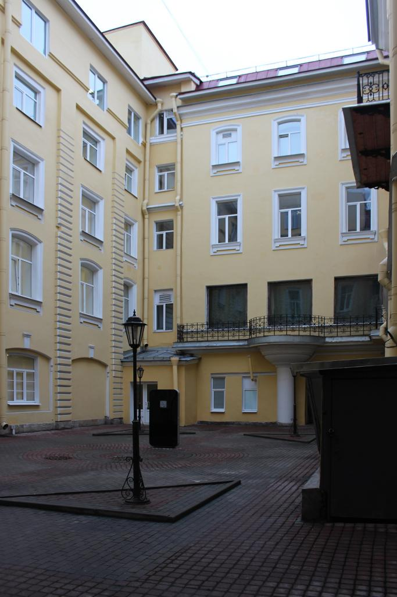
Винные склады
На угловом участке № 16/2 в первой четверти XIX века были сооружены каменные двухэтажные склады с классицистическим фасадом. Там в 1824 г. купец П. Е. Елисеев открыл винную торговлю, с которой началась история фирмы. В 1868-1869 гг. Н. П. Гребенка расширил склады, и они считались грандиозным сооружением своего времени. Каждый сорт вина имел здесь своё помещение, чем улучшались условия его хранения. С передачей здания ГОИ, в 1938-1939 гг., арх-ры Б. С. Ребортович и А. И. Гегелло надстроили корпус, изменили оформление фасада, включили в его композицию скульптурные эмблемы науки и техники. В 1930-х годах здесь находился музей потребительской кооперации (ЛСПО), экспонаты которого отражали историю рабочей кооперации в Ленинграде. В 1862 г. Григорий Петрович Елисеев начал строительство собственных винных подвалов. Строительство вел арх. Н. П. Гребенка. Винные подвалы представляли собой одноэтажное монументальное каменное сооружение. Главный фасад выходил на Биржевую линию. В здании были установлены огромные дубовые бочки емкостью 700 ведер, в которых завершался процесс созревания вина. По данным на 1900 г. общая протяженность елисеевских винных подвалов составляла 475 саженей (сажень= 2 м 13 см), площадь 4300 квадратных саженей.Каждый сорт вина хранился в особом помещении.
Музей оптики
Интерактивный Музей оптики организован в 2008 году, расположен на первом этаже бывшего дома купца Григория Елисеева на Биржевой линии. В 11 залах представлены оптоклоны изделий Фаберже, включая его пасхальные яйца, уникальная коллекция оптических стёкол и голограммы, созданные ещё во времена основоположника отечественной оптической голографии Юрия Денисюка, который работал в этом здании в советское время.